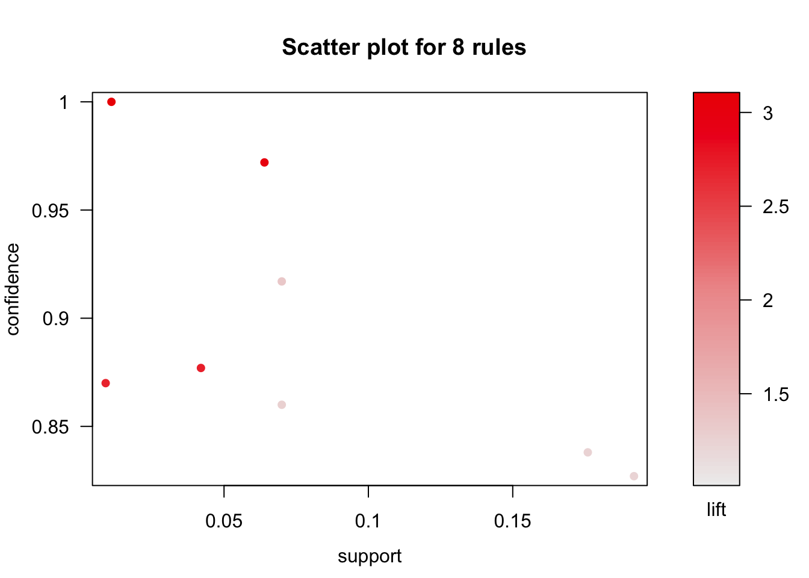
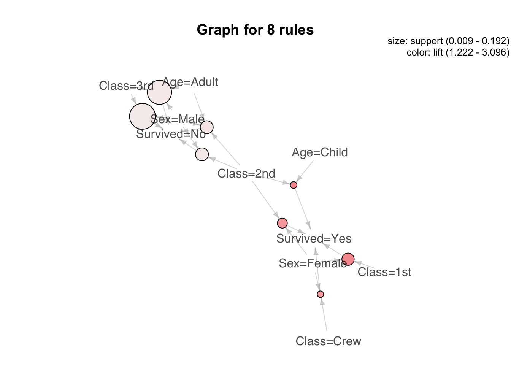
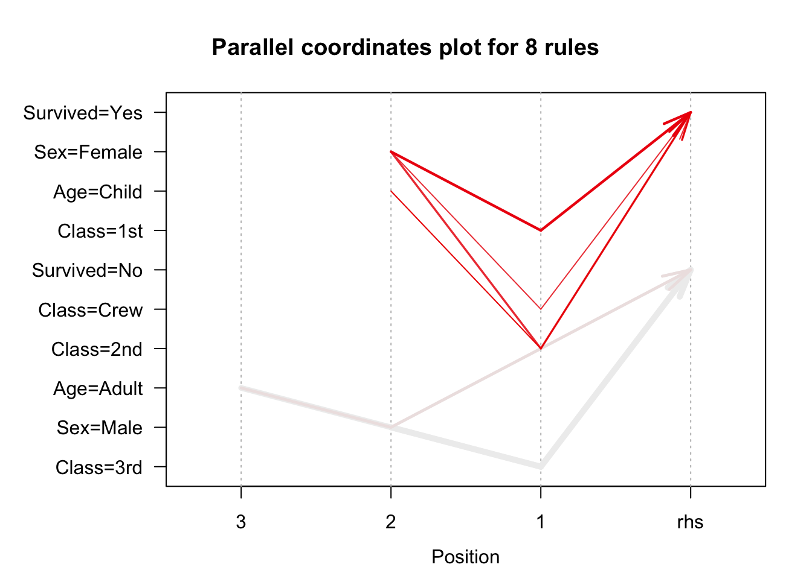

Objectives:
The objective of this document is to give a brief introduction to association mining. This document assumes the users have no prior knowledge of R. After completing this tutorial, you will be able to:
Let’s load our main data to use:
load(url("http://www.rdatamining.com/data/titanic.raw.rdata?attredirects=0&d=1"))Install and load packages:
#install.packages("arules")
require(arules)Mine the closed and maximal itemsets:
closed.itemset <- apriori(titanic.raw, parameter = list(target="closed frequent itemsets"))## Apriori
##
## Parameter specification:
## confidence minval smax arem aval originalSupport maxtime support minlen
## NA 0.1 1 none FALSE TRUE 5 0.1 1
## maxlen target ext
## 10 closed frequent itemsets FALSE
##
## Algorithmic control:
## filter tree heap memopt load sort verbose
## 0.1 TRUE TRUE FALSE TRUE 2 TRUE
##
## Absolute minimum support count: 220
##
## set item appearances ...[0 item(s)] done [0.00s].
## set transactions ...[10 item(s), 2201 transaction(s)] done [0.00s].
## sorting and recoding items ... [9 item(s)] done [0.00s].
## creating transaction tree ... done [0.00s].
## checking subsets of size 1 2 3 4 done [0.00s].
## filtering closed item sets ... done [0.00s].
## writing ... [31 set(s)] done [0.00s].
## creating S4 object ... done [0.00s].max.itemset <- apriori(titanic.raw, parameter = list(target="maximally frequent itemsets"))## Apriori
##
## Parameter specification:
## confidence minval smax arem aval originalSupport maxtime support minlen
## NA 0.1 1 none FALSE TRUE 5 0.1 1
## maxlen target ext
## 10 maximally frequent itemsets FALSE
##
## Algorithmic control:
## filter tree heap memopt load sort verbose
## 0.1 TRUE TRUE FALSE TRUE 2 TRUE
##
## Absolute minimum support count: 220
##
## set item appearances ...[0 item(s)] done [0.00s].
## set transactions ...[10 item(s), 2201 transaction(s)] done [0.00s].
## sorting and recoding items ... [9 item(s)] done [0.00s].
## creating transaction tree ... done [0.00s].
## checking subsets of size 1 2 3 4 done [0.00s].
## filtering maximal item sets ... done [0.00s].
## writing ... [6 set(s)] done [0.00s].
## creating S4 object ... done [0.00s].Mine initial association rules with default settings (i.e minsup = 0.1, mincon = 0.8, maxlength = 10).
rules <- apriori(titanic.raw)## Apriori
##
## Parameter specification:
## confidence minval smax arem aval originalSupport maxtime support minlen
## 0.8 0.1 1 none FALSE TRUE 5 0.1 1
## maxlen target ext
## 10 rules FALSE
##
## Algorithmic control:
## filter tree heap memopt load sort verbose
## 0.1 TRUE TRUE FALSE TRUE 2 TRUE
##
## Absolute minimum support count: 220
##
## set item appearances ...[0 item(s)] done [0.00s].
## set transactions ...[10 item(s), 2201 transaction(s)] done [0.00s].
## sorting and recoding items ... [9 item(s)] done [0.00s].
## creating transaction tree ... done [0.00s].
## checking subsets of size 1 2 3 4 done [0.00s].
## writing ... [27 rule(s)] done [0.00s].
## creating S4 object ... done [0.00s].This creates a total of 27 rules, which is not a lot. However when you have a larger dataset, you are likely to get a much bigger rule set.
Let’s inspect the rules:
inspect(rules)## lhs rhs support
## [1] {} => {Age=Adult} 0.9504771
## [2] {Class=2nd} => {Age=Adult} 0.1185825
## [3] {Class=1st} => {Age=Adult} 0.1449341
## [4] {Sex=Female} => {Age=Adult} 0.1930940
## [5] {Class=3rd} => {Age=Adult} 0.2848705
## [6] {Survived=Yes} => {Age=Adult} 0.2971377
## [7] {Class=Crew} => {Sex=Male} 0.3916402
## [8] {Class=Crew} => {Age=Adult} 0.4020900
## [9] {Survived=No} => {Sex=Male} 0.6197183
## [10] {Survived=No} => {Age=Adult} 0.6533394
## [11] {Sex=Male} => {Age=Adult} 0.7573830
## [12] {Sex=Female,Survived=Yes} => {Age=Adult} 0.1435711
## [13] {Class=3rd,Sex=Male} => {Survived=No} 0.1917310
## [14] {Class=3rd,Survived=No} => {Age=Adult} 0.2162653
## [15] {Class=3rd,Sex=Male} => {Age=Adult} 0.2099046
## [16] {Sex=Male,Survived=Yes} => {Age=Adult} 0.1535666
## [17] {Class=Crew,Survived=No} => {Sex=Male} 0.3044071
## [18] {Class=Crew,Survived=No} => {Age=Adult} 0.3057701
## [19] {Class=Crew,Sex=Male} => {Age=Adult} 0.3916402
## [20] {Class=Crew,Age=Adult} => {Sex=Male} 0.3916402
## [21] {Sex=Male,Survived=No} => {Age=Adult} 0.6038164
## [22] {Age=Adult,Survived=No} => {Sex=Male} 0.6038164
## [23] {Class=3rd,Sex=Male,Survived=No} => {Age=Adult} 0.1758292
## [24] {Class=3rd,Age=Adult,Survived=No} => {Sex=Male} 0.1758292
## [25] {Class=3rd,Sex=Male,Age=Adult} => {Survived=No} 0.1758292
## [26] {Class=Crew,Sex=Male,Survived=No} => {Age=Adult} 0.3044071
## [27] {Class=Crew,Age=Adult,Survived=No} => {Sex=Male} 0.3044071
## confidence lift count
## [1] 0.9504771 1.0000000 2092
## [2] 0.9157895 0.9635051 261
## [3] 0.9815385 1.0326798 319
## [4] 0.9042553 0.9513700 425
## [5] 0.8881020 0.9343750 627
## [6] 0.9198312 0.9677574 654
## [7] 0.9740113 1.2384742 862
## [8] 1.0000000 1.0521033 885
## [9] 0.9154362 1.1639949 1364
## [10] 0.9651007 1.0153856 1438
## [11] 0.9630272 1.0132040 1667
## [12] 0.9186047 0.9664669 316
## [13] 0.8274510 1.2222950 422
## [14] 0.9015152 0.9484870 476
## [15] 0.9058824 0.9530818 462
## [16] 0.9209809 0.9689670 338
## [17] 0.9955423 1.2658514 670
## [18] 1.0000000 1.0521033 673
## [19] 1.0000000 1.0521033 862
## [20] 0.9740113 1.2384742 862
## [21] 0.9743402 1.0251065 1329
## [22] 0.9242003 1.1751385 1329
## [23] 0.9170616 0.9648435 387
## [24] 0.8130252 1.0337773 387
## [25] 0.8376623 1.2373791 387
## [26] 1.0000000 1.0521033 670
## [27] 0.9955423 1.2658514 670Even with 27 rules, it is very difficult to interpret their meaning. We might need to be more specific about what we are looking for. Assume we are interested in the rules that point to the survival status of the individuals, this means we want the Survived variable to be on the right hand side of the association rule.
rules.survived <- apriori(titanic.raw,
parameter = list(minlen=2, supp=0.005, conf=0.8),
appearance = list(rhs=c("Survived=No", "Survived=Yes"),
default="lhs"),
control = list(verbose=F))
rules.survived<-sort(rules.survived,by="lift")
quality(rules.survived)<-round(quality(rules.survived),digits=3) #Round the values of interest measure to three digits after decimal pointBefore we intrepret the rules, let’s go over the code. The setting parameter = list(...) allows you to set the parameters such as minimum support/confidence. The setting appearance = list(...) allows you to control which rules appear on the right and left hand sides of the rule set.
When we inspect the rules below, we can see that children and female are more likely to survive than men. However, there is some redundancy in the rules. For example; rule 2 provides no extra knowledge in addition to rule 1, since rules 1 tells us that all 2nd-class children survived. Generally speaking, when a rule (such as rule 2) is a super rule of another rule (such as rule 1) and the former has the same or a lower lift, the former rule (rule 2) is considered to be redundant.
inspect(rules.survived)## lhs rhs support
## [1] {Class=2nd,Age=Child} => {Survived=Yes} 0.011
## [2] {Class=2nd,Sex=Female,Age=Child} => {Survived=Yes} 0.006
## [3] {Class=1st,Sex=Female} => {Survived=Yes} 0.064
## [4] {Class=1st,Sex=Female,Age=Adult} => {Survived=Yes} 0.064
## [5] {Class=2nd,Sex=Female} => {Survived=Yes} 0.042
## [6] {Class=Crew,Sex=Female} => {Survived=Yes} 0.009
## [7] {Class=Crew,Sex=Female,Age=Adult} => {Survived=Yes} 0.009
## [8] {Class=2nd,Sex=Female,Age=Adult} => {Survived=Yes} 0.036
## [9] {Class=2nd,Sex=Male,Age=Adult} => {Survived=No} 0.070
## [10] {Class=2nd,Sex=Male} => {Survived=No} 0.070
## [11] {Class=3rd,Sex=Male,Age=Adult} => {Survived=No} 0.176
## [12] {Class=3rd,Sex=Male} => {Survived=No} 0.192
## confidence lift count
## [1] 1.000 3.096 24
## [2] 1.000 3.096 13
## [3] 0.972 3.010 141
## [4] 0.972 3.010 140
## [5] 0.877 2.716 93
## [6] 0.870 2.692 20
## [7] 0.870 2.692 20
## [8] 0.860 2.663 80
## [9] 0.917 1.354 154
## [10] 0.860 1.271 154
## [11] 0.838 1.237 387
## [12] 0.827 1.222 422First we find rules that are subset of the rules:
subset.matrix <- is.subset(rules.survived@lhs, rules.survived@lhs,sparse=FALSE)
subset.matrix[lower.tri(subset.matrix, diag=T)] <- NA #Lower triangle and upper triangle are the same so in order to use only one of those, we make lower triangle NAFind the redundant rules:
redundant <- (colSums(subset.matrix, na.rm=T))==1 #We sum the columns of subset.matrix (matrix of 1s and 0s) to see how many supersets a column has. na.rm=T ignores the NA values
which(redundant) #returns redundant sets## {Class=2nd,Sex=Female,Age=Child} {Class=1st,Sex=Female,Age=Adult}
## 2 4
## {Class=Crew,Sex=Female,Age=Adult} {Class=2nd,Sex=Female,Age=Adult}
## 7 8Obtain non-redundant rule sets:
rules.pruned <- rules.survived[!redundant]
inspect(rules.pruned)## lhs rhs support confidence
## [1] {Class=2nd,Age=Child} => {Survived=Yes} 0.011 1.000
## [2] {Class=1st,Sex=Female} => {Survived=Yes} 0.064 0.972
## [3] {Class=2nd,Sex=Female} => {Survived=Yes} 0.042 0.877
## [4] {Class=Crew,Sex=Female} => {Survived=Yes} 0.009 0.870
## [5] {Class=2nd,Sex=Male,Age=Adult} => {Survived=No} 0.070 0.917
## [6] {Class=2nd,Sex=Male} => {Survived=No} 0.070 0.860
## [7] {Class=3rd,Sex=Male,Age=Adult} => {Survived=No} 0.176 0.838
## [8] {Class=3rd,Sex=Male} => {Survived=No} 0.192 0.827
## lift count
## [1] 3.096 24
## [2] 3.010 141
## [3] 2.716 93
## [4] 2.692 20
## [5] 1.354 154
## [6] 1.271 154
## [7] 1.237 387
## [8] 1.222 422Now the relationships are much clearer!
###Different Interestingness Measures
Suppose we want to see gini, leverage and oddsRatio interest measures. We can mine those using the following code:
measure.names <- c("gini", "leverage", "oddsRatio") #Make a name vector of in terestingness measures that we want
measure.values <- interestMeasure(rules.pruned, measure.names, transactions = titanic.raw)
measure.values## gini leverage oddsRatio
## 1 0.010195465 0.007447028 NA
## 2 0.059390335 0.042737542 90.529504
## 3 0.030886382 0.026536082 17.037188
## 4 0.006251129 0.005656761 14.388224
## 5 0.009500632 0.018301329 5.756708
## 6 0.005958615 0.014925256 3.159078
## 7 0.013706608 0.033720291 2.976442
## 8 0.013649981 0.034880524 2.791492This command gives us the new interest measures in a data frame for each of the rules we provided. For other measures, see help documentation for interestMeasure function.
After obtaining rules, we can visualize them for better exploration. We can use scatter plots, balloon plots and parallel coordinates plots. The details of those plots will be explained in class.
Install and load the required package:
#install.packages("arulesViz")
require(arulesViz)plot(rules.pruned)
The scatter plot gives us information about how support-confidence-lift measures are distributed along retained rules. However, it is not very helpful to actually see which rules have which values.
To see the relationship between rules we can use either a balloon plot or parallel coordinates graph.
plot(rules.pruned, method="graph", control=list(type="items"))## Available control parameters (with default values):
## main = Graph for 8 rules
## nodeColors = c("#66CC6680", "#9999CC80")
## nodeCol = c("#EE0000FF", "#EE0303FF", "#EE0606FF", "#EE0909FF", "#EE0C0CFF", "#EE0F0FFF", "#EE1212FF", "#EE1515FF", "#EE1818FF", "#EE1B1BFF", "#EE1E1EFF", "#EE2222FF", "#EE2525FF", "#EE2828FF", "#EE2B2BFF", "#EE2E2EFF", "#EE3131FF", "#EE3434FF", "#EE3737FF", "#EE3A3AFF", "#EE3D3DFF", "#EE4040FF", "#EE4444FF", "#EE4747FF", "#EE4A4AFF", "#EE4D4DFF", "#EE5050FF", "#EE5353FF", "#EE5656FF", "#EE5959FF", "#EE5C5CFF", "#EE5F5FFF", "#EE6262FF", "#EE6666FF", "#EE6969FF", "#EE6C6CFF", "#EE6F6FFF", "#EE7272FF", "#EE7575FF", "#EE7878FF", "#EE7B7BFF", "#EE7E7EFF", "#EE8181FF", "#EE8484FF", "#EE8888FF", "#EE8B8BFF", "#EE8E8EFF", "#EE9191FF", "#EE9494FF", "#EE9797FF", "#EE9999FF", "#EE9B9BFF", "#EE9D9DFF", "#EE9F9FFF", "#EEA0A0FF", "#EEA2A2FF", "#EEA4A4FF", "#EEA5A5FF", "#EEA7A7FF", "#EEA9A9FF", "#EEABABFF", "#EEACACFF", "#EEAEAEFF", "#EEB0B0FF", "#EEB1B1FF", "#EEB3B3FF", "#EEB5B5FF", "#EEB7B7FF", "#EEB8B8FF", "#EEBABAFF", "#EEBCBCFF", "#EEBDBDFF", "#EEBFBFFF", "#EEC1C1FF", "#EEC3C3FF", "#EEC4C4FF", "#EEC6C6FF", "#EEC8C8FF", "#EEC9C9FF", "#EECBCBFF", "#EECDCDFF", "#EECFCFFF", "#EED0D0FF", "#EED2D2FF", "#EED4D4FF", "#EED5D5FF", "#EED7D7FF", "#EED9D9FF", "#EEDBDBFF", "#EEDCDCFF", "#EEDEDEFF", "#EEE0E0FF", "#EEE1E1FF", "#EEE3E3FF", "#EEE5E5FF", "#EEE7E7FF", "#EEE8E8FF", "#EEEAEAFF", "#EEECECFF", "#EEEEEEFF")
## edgeCol = c("#474747FF", "#494949FF", "#4B4B4BFF", "#4D4D4DFF", "#4F4F4FFF", "#515151FF", "#535353FF", "#555555FF", "#575757FF", "#595959FF", "#5B5B5BFF", "#5E5E5EFF", "#606060FF", "#626262FF", "#646464FF", "#666666FF", "#686868FF", "#6A6A6AFF", "#6C6C6CFF", "#6E6E6EFF", "#707070FF", "#727272FF", "#747474FF", "#767676FF", "#787878FF", "#7A7A7AFF", "#7C7C7CFF", "#7E7E7EFF", "#808080FF", "#828282FF", "#848484FF", "#868686FF", "#888888FF", "#8A8A8AFF", "#8C8C8CFF", "#8D8D8DFF", "#8F8F8FFF", "#919191FF", "#939393FF", "#959595FF", "#979797FF", "#999999FF", "#9A9A9AFF", "#9C9C9CFF", "#9E9E9EFF", "#A0A0A0FF", "#A2A2A2FF", "#A3A3A3FF", "#A5A5A5FF", "#A7A7A7FF", "#A9A9A9FF", "#AAAAAAFF", "#ACACACFF", "#AEAEAEFF", "#AFAFAFFF", "#B1B1B1FF", "#B3B3B3FF", "#B4B4B4FF", "#B6B6B6FF", "#B7B7B7FF", "#B9B9B9FF", "#BBBBBBFF", "#BCBCBCFF", "#BEBEBEFF", "#BFBFBFFF", "#C1C1C1FF", "#C2C2C2FF", "#C3C3C4FF", "#C5C5C5FF", "#C6C6C6FF", "#C8C8C8FF", "#C9C9C9FF", "#CACACAFF", "#CCCCCCFF", "#CDCDCDFF", "#CECECEFF", "#CFCFCFFF", "#D1D1D1FF", "#D2D2D2FF", "#D3D3D3FF", "#D4D4D4FF", "#D5D5D5FF", "#D6D6D6FF", "#D7D7D7FF", "#D8D8D8FF", "#D9D9D9FF", "#DADADAFF", "#DBDBDBFF", "#DCDCDCFF", "#DDDDDDFF", "#DEDEDEFF", "#DEDEDEFF", "#DFDFDFFF", "#E0E0E0FF", "#E0E0E0FF", "#E1E1E1FF", "#E1E1E1FF", "#E2E2E2FF", "#E2E2E2FF", "#E2E2E2FF")
## alpha = 0.5
## cex = 1
## itemLabels = TRUE
## labelCol = #000000B3
## measureLabels = FALSE
## precision = 3
## layout = NULL
## layoutParams = list()
## arrowSize = 0.5
## engine = igraph
## plot = TRUE
## plot_options = list()
## max = 100
## verbose = FALSE
The balloon plot gives us information about the rules, support and lift measures. However it doesn’t give us any information about confidence levels.
plot(rules.pruned, method="paracoord", control=list(reorder=TRUE))
Parallel coordinates plots give us an excellent picture of rules.